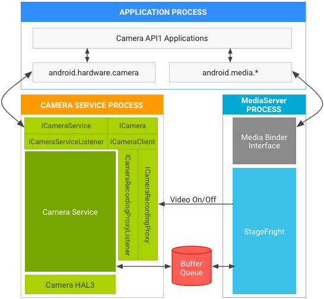
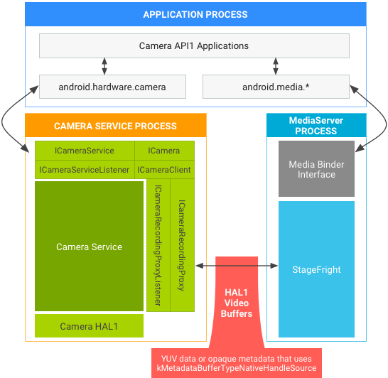
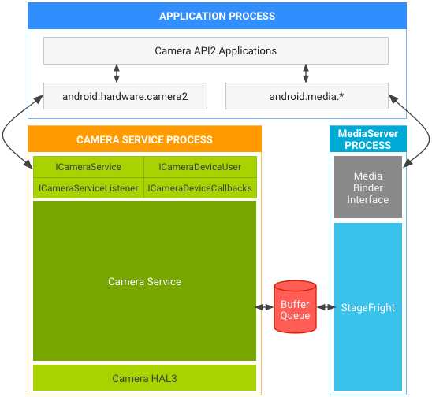

This page details version differences in Camera HALs, APIs, and associated Compatibility Test Suite (CTS) tests. It also covers several architectural changes made to harden and secure the camera framework in Android 7.0, the switch to Treble in Android 8.0, and the updates vendors must make to support these changes in their camera implementations.
Terminology
The following terms are used on this page:
- Camera API1
- The app-level camera framework on Android 4.4 and lower devices, exposed
through the
android.hardware.Cameraclass. - Camera API2
- The app-level camera framework on Android 5.0 and higher devices, exposed
through the
android.hardware.camera2package. - Camera HAL
- The camera module layer implemented by SoC vendors. The app-level public frameworks are built on top of the camera HAL.
- Camera HAL3.1
- Version of the camera device HAL released with Android 4.4.
- Camera HAL3.2
- Version of the camera device HAL released with Android 5.0.
- Camera API1 CTS
- Set of camera CTS tests that run on top of Camera API1.
- Camera API2 CTS
- Additional set of camera CTS tests that run on top of Camera API2.
- Treble
- Separates the vendor implementation (device-specific, lower-level software written by silicon manufacturers) from the Android OS framework through a new vendor interface.
- HIDL
- HAL interface definition language introduced with Treble and used to specify the interface between a HAL and its users.
- VTS
- Vendor test suite introduced alongside Treble.
Camera APIs
Android includes the following camera APIs.
Camera API1
Android 5.0 deprecated Camera API1, which continues to be phased out as new platform development focuses on Camera API2. However, the phase-out period will be lengthy, and Android releases will continue to support Camera API1 apps for some time. Specifically, support continues for:
- Camera API1 interfaces for apps. Camera apps built on top of Camera API1 should work as they do on devices running lower Android release versions.
- Camera HAL versions. Includes support for Camera HAL1.0.
Camera API2
The Camera API2 framework exposes lower-level camera control to the app, including efficient zero-copy burst/streaming flows and per-frame controls of exposure, gain, white balance gains, color conversion, denoising, sharpening, and more. For details, watch the Google I/O video overview.
Android 5.0 and higher includes Camera API2; however, devices running Android
5.0 and higher may not support all Camera API2 features. The
android.info.supportedHardwareLevel property that apps can query
through the Camera API2 interfaces reports one of the following support
levels:
LEGACY: These devices expose capabilities to apps through the Camera API2 interfaces that are approximately the same capabilities as those exposed to apps through the Camera API1 interfaces. The legacy frameworks code conceptually translates Camera API2 calls into Camera API1 calls; legacy devices don't support Camera API2 features such as per-frame controls.LIMITED: These devices support some Camera API2 capabilities (but not all) and must use Camera HAL 3.2 or higher.FULL: These devices support all of the major capabilities of Camera API2 and must use Camera HAL 3.2 or higher and Android 5.0 or higher.LEVEL_3: These devices support YUV reprocessing and RAW image capture, along with additional output stream configurations.EXTERNAL: These devices are similar toLIMITEDdevices with some exceptions; for example, some sensor or lens information may not be reported or have less stable frame rates. This level is used for external cameras such as USB webcams.
Individual capabilities are exposed through the
android.request.availableCapabilities property in the Camera API2
interfaces. FULL devices require the MANUAL_SENSOR and
MANUAL_POST_PROCESSING capabilities, among others. The
RAW capability is optional even for FULL devices.
LIMITED devices can advertise any subset of these capabilities,
including none of them. However, the BACKWARD_COMPATIBLE capability
must always be defined.
The supported hardware level of the device, as well as the specific Camera API2 capabilities it supports, are available as the following feature flags to allow Google Play filtering of Camera API2 camera apps.
android.hardware.camera.hardware_level.fullandroid.hardware.camera.capability.rawandroid.hardware.camera.capability.manual_sensorandroid.hardware.camera.capability.manual_post_processing
CTS requirements
Devices running Android 5.0 and higher must pass the Camera API1 CTS, Camera API2 CTS, and CTS Verifier camera tests.
Devices that don't feature a Camera HAL3.2 implementation and aren't
capable of supporting the full Camera API2 interfaces must still pass the Camera
API2 CTS tests. However, the device runs in Camera API2
LEGACY mode (in which the Camera API2 calls are conceptually mapped
to Camera API1 calls) so any Camera API2 CTS tests related to features or
capabilities beyond Camera API1 are automatically skipped.
On legacy devices, Camera API2 CTS tests that are run use the existing public Camera API1 interfaces and capabilities with no new requirements. Bugs that are exposed (and that cause a Camera API2 CTS failure) are bugs already present in the device’s existing Camera HAL, and thus would be found by existing Camera API1 apps. We don't expect many bugs of this nature (however, any such bugs must be fixed to pass the Camera API2 CTS tests).
VTS requirements
Devices running Android 8.0 and higher with binderized HAL implementations must pass the Camera VTS tests.
Camera framework hardening
To harden media and camera framework security, Android 7.0 moves camera service out of mediaserver. Starting with Android 8.0, each binderized Camera HAL runs in a process separate from camera service. Vendors may need to make changes in the camera HAL depending on the API and HAL versions in use. The following sections detail architectural changes in AP1 and AP2 for HAL1 and HAL3, as well as general requirements.
Architectural changes for API1
API1 video recording may assume camera and video encoder live in the same process. When using API1 on:
- HAL3, where camera service uses BufferQueue to pass buffers between
processes, no vendor update is necessary.

Figure 1. Android 7.0 camera and media stack in API1 on HAL3
- HAL1, which supports passing metadata in video buffers, vendors must
update the HAL to use
kMetadataBufferTypeNativeHandleSource. (kMetadataBufferTypeCameraSourceis no longer supported in Android 7.0.)
Figure 2. Android 7.0 camera and media stack in API1 on HAL1
Architectural changes for API2
For API2 on HAL1 or HAL3, BufferQueue passes buffers so those paths continue to work. The Android 7.0 architecture for API2 on:
- HAL1 isn't affected by the cameraservice move, and no vendor update is necessary.
- HAL3 is affected, but no vendor update is
necessary:

Figure 3. Android 7.0 camera and media stack in API2 on HAL3
Additional requirements
The architectural changes made for hardening media and camera framework security include the following additional device requirements.
- General. Devices require additional bandwidth due to IPC,
which may affect time-sensitive camera use cases such as high-speed video
recording. Vendors can measure actual impact by running
android.hardware.camera2.cts.PerformanceTestand the Google Camera app for 120/240 FPS high-speed video recording. Devices also require a small amount of additional RAM to create the new process. - Pass metadata in video buffers (HAL1 only). If HAL1
stores metadata instead of real YUV frame data in video buffers, the HAL must
use
kMetadataBufferTypeNativeHandleSourceas the metadata buffer type and passVideoNativeHandleMetadatain video buffers. (kMetadataBufferTypeCameraSourceis no longer supported on Android 7.0.) WithVideoNativeHandleMetadata, camera and media frameworks are able to pass the video buffers between processes by serializing and deserializing the native handles properly. - Buffer handle address doesn't always store the same buffer (HAL3 only). For each capture request, HAL3 gets addresses of buffer handles. HAL can't use the addresses to identify buffers because the addresses may store another buffer handle after HAL returns the buffer. You must update the HAL to use buffer handles to identify the buffers. For example, HAL receives a buffer handle address A, which stores buffer handle A. After HAL returns buffer handle A, buffer handle address A may store buffer handle B next time the HAL receives it.
- Update SELinux policies for cameraserver. If device-specific SELinux policies give mediaserver permissions to run the camera, you must update the SELinux policies to give cameraserver proper permissions. We discourage replicating the mediaserver's SELinux policies for cameraserver (as mediaserver and cameraserver generally require different resources in the system). Cameraserver should have only the permissions needed to perform camera functionalities and any unnecessary camera-related permissions in mediaserver should be removed.
- Separation between Camera HAL and cameraserver. Android 8.0 and higher additionally separate the binderized Camera HAL in a process different from cameraserver. IPC goes through HIDL-defined interfaces.
Validation
For all devices that include a camera and run Android 7.0, verify the implementation by running Android 7.0 CTS. Although Android 7.0 doesn't include new CTS tests that verify camera service changes, existing CTS tests fail if you haven't made the updates indicated above.
For all devices that include a camera and run Android 8.0 and higher, verify the vendor implementation by running VTS.
Camera HAL version history
For a list of tests available for evaluating the Android Camera HAL, see the Camera HAL Testing Checklist.
Android 10
Android 10 introduces the following updates.
Camera API
- Multi-camera improvements that allow physical cameras to be used individually or through corresponding logical cameras by hiding physical camera IDs. See Multi-Camera Support.
- Ability to check whether a particular session configuration is
supported without the performance overhead of creating a new session.
See
CameraDevice. - Ability to retrieve recommended stream configurations for a given use
case to make the client more power efficient and performant. See
getRecommendedStreamConfigurationMap. - Support for the depth JPEG image format. For further details, see the Dynamic Depth specification.
- Support for the HEIC Image format. See HEIF Imaging.
- Privacy improvements. Certain keys are required for the client
to have
CAMERApermissions before they can be retrieved fromCameraCharacteristics. SeegetKeysNeedingPermission.
Camera HAL
The following Camera HAL versions are updated in Android 10.
3.5
ICameraDevice
-
getPhysicalCameraCharacteristics: The static camera information for a physical camera ID backing a logical camera device. See Multi-Camera Support. isStreamCombinationSupported: This method supports a public API that helps clients query if a session configuration is supported. See API to query stream combinations.
ICameraDeviceSession
-
isReconfigurationNeeded: Method that tells the camera framework whether complete stream reconfiguration is required for possible new session parameter values. This helps avoid unnecessary camera reconfiguration delays. See Session reconfiguration query. - HAL
buffer management APIs: These APIs allow the camera HAL to request
buffers from the camera framework only when required instead of coupling each
capture request with its associated buffers throughout the camera pipeline,
resulting in potentially significant memory savings.
-
signalStreamFlush: Signals to the HAL that the camera service is about to performconfigureStreams_3_5and that the HAL must return all buffers of designated streams. -
configureStreams_3_5: Similar toICameraDevice3.4.configureStreams, but in addition, thestreamConfigCountercounter is provided to check for a race condition between theconfigureStreams_3_5andsignalStreamFlushcalls.
-
Updates to ICameraDeviceCallback:
-
requestStreamBuffers: Synchronous callback that the camera HAL calls to ask the camera server for buffers. SeerequestStreamBuffers. -
returnStreamBuffers: Synchronous callback for the camera HAL to return output buffers to the camera server. SeereturnStreamBuffers.
3.4
The following keys are added to camera metadata in Android 10.
- Image formats
ANDROID_SCALER_AVAILABLE_FORMATS_RAW10ANDROID_SCALER_AVAILABLE_FORMATS_RAW12ANDROID_SCALER_AVAILABLE_FORMATS_Y8
- Camera metadata tags
ANDROID_REQUEST_CHARACTERISTIC_KEYS_NEEDING_PERMISSIONANDROID_SCALER_AVAILABLE_RECOMMENDED_STREAM_CONFIGURATIONSANDROID_SCALER_AVAILABLE_RECOMMENDED_INPUT_OUTPUT_FORMATS_MAPANDROID_INFO_SUPPORTED_BUFFER_MANAGEMENT_VERSIONANDROID_DEPTH_AVAILABLE_RECOMMENDED_DEPTH_STREAM_CONFIGURATIONSANDROID_DEPTH_AVAILABLE_DYNAMIC_DEPTH_STREAM_CONFIGURATIONSANDROID_DEPTH_AVAILABLE_DYNAMIC_DEPTH_MIN_FRAME_DURATIONSANDROID_LOGICAL_MULTI_CAMERA_ACTIVE_PHYSICAL_IDANDROID_HEIC_AVAILABLE_HEIC_STREAM_CONFIGURATIONSANDROID_HEIC_AVAILABLE_HEIC_MIN_FRAME_DURATIONSANDROID_HEIC_AVAILABLE_HEIC_STALL_DURATIONSANDROID_HEIC_INFO_SUPPORTEDANDROID_HEIC_INFO_MAX_JPEG_APP_SEGMENTS_COUNT
- Capabilities
-
ANDROID_REQUEST_AVAILABLE_CAPABILITIES_SECURE_IMAGE_DATA
-
- Values for the
ANDROID_SENSOR_INFO_COLOR_FILTER_ARRANGEMENTkeyANDROID_SENSOR_INFO_COLOR_FILTER_ARRANGEMENT_MONOANDROID_SENSOR_INFO_COLOR_FILTER_ARRANGEMENT_NIR
- Available dynamic depth stream configurations
ANDROID_DEPTH_AVAILABLE_DYNAMIC_DEPTH_STREAM_CONFIGURATIONS_OUTPUTANDROID_DEPTH_AVAILABLE_DYNAMIC_DEPTH_STREAM_CONFIGURATIONS_INPUT
- Available HEIC stream configurations
-
ANDROID_HEIC_AVAILABLE_HEIC_STREAM_CONFIGURATIONS_OUTPUT ANDROID_HEIC_AVAILABLE_HEIC_STREAM_CONFIGURATIONS_INPUT
-
Camera module
The following camera module versions are updated in Android 10.
2.5
- Adds the
notifyDeviceStateChangemethod for devices to notify the camera HAL when physical changes, such as folding, affect camera and routing.
2.4
- Devices launching with API level 29 or higher MUST report
trueforisTorchModeSupported.
Android 9
The Android 9 release introduces the following updates to the camera API2 and HAL interface.
Camera API
- Introduces the multi-camera API to better support devices with multiple cameras facing in the same direction, enabling features such as bokeh and seamless zoom. This allows apps to view multiple cameras on a device as one logical unit (logical camera). Capture requests can also be sent to individual camera devices encompassed by one logical camera. See Multi-Camera Support.
- Introduces session parameters. Session parameters are a subset of the available capture parameters that can cause severe processing delays when modified. These costs can be mitigated if clients pass their initial values during capture session initialization. See Session Parameters.
- Adds optical stabilization (OIS) data keys for app-level stabilization and
effects. See
STATISTICS_OIS_SAMPLES. - Adds external flash support. See
CONTROL_AE_MODE_ON_EXTERNAL_FLASH. - Adds a motion tracking intent in
CAPTURE_INTENT. SeeCONTROL_CAPTURE_INTENT_MOTION_TRACKING. - Deprecates
LENS_RADIAL_DISTORTIONand addsLENS_DISTORTIONin its place. - Adds distortion correction modes in
CaptureRequest. SeeDISTORTION_CORRECTION_MODE. - Adds support for external USB/UVC cameras on supported devices. See
INFO_SUPPORTED_HARDWARE_LEVEL_EXTERNAL.
Camera HAL
3.4
Updates to ICameraDeviceSession
-
configureStreams_3_4: Adds support forsessionParametersand logical cameras. -
processCaptureRequest_3_4: Adds support for including physical camera IDs in stream structure.
Updates to ICameraDeviceCallback
-
processCaptureResult_3_4: Adds physical camera metadata in capture results.
3.3
The following keys are added to camera metadata in Android 9.
- Capabilities
ANDROID_REQUEST_AVAILABLE_CAPABILITIES_LOGICAL_MULTI_CAMERAANDROID_REQUEST_AVAILABLE_CAPABILITIES_MOTION_TRACKINGANDROID_REQUEST_AVAILABLE_CAPABILITIES_MONOCHROME
- Camera metadata tags
ANDROID_LOGICAL_MULTI_CAMERA_PHYSICAL_IDSANDROID_LOGICAL_MULTI_CAMERA_SENSOR_SYNC_TYPEANDROID_DISTORTION_CORRECTION_AVAILABLE_MODESANDROID_LENS_POSE_REFERENCE-
ANDROID_LENS_DISTORTION ANDROID_REQUEST_AVAILABLE_SESSION_KEYSANDROID_REQUEST_AVAILABLE_PHYSICAL_CAMERA_REQUEST_KEYSANDROID_STATISTICS_OIS_DATA_MODEANDROID_STATISTICS_OIS_TIMESTAMPSANDROID_STATISTICS_OIS_X_SHIFTSANDROID_STATISTICS_OIS_Y_SHIFTS
Android 8.0
The Android 8.0 release introduces Treble. With Treble, vendor Camera HAL implementations must be binderized. Android 8.0 also contains these key enhancements to the Camera service:
- Shared surfaces: Enable multiple surfaces sharing the same
OutputConfiguration - System API for custom camera modes
onCaptureQueueEmpty
See the sections below for more information on these features.
Shared surfaces
This feature enables only one set of buffers to drive two outputs, such as preview and video encoding, which lowers power and memory consumption. To support this feature, device manufacturers need to ensure their camera HAL and gralloc HAL implementations can create gralloc buffers that are used by multiple different consumers (such as the hardware composer/GPU and the video encoder), instead of just one consumer. The camera service passes the consumer usage flags to the camera HAL and the gralloc HAL; they need to either allocate the right kinds of buffers, or the camera HAL needs to return an error that this combination of consumers isn't supported.
See the
enableSurfaceSharing
developer documentation for additional details.
System API for custom camera modes
The public camera API defines two operating modes: normal and constrained
high-speed recording. They have fairly different semantics; for example,
high-speed mode is limited to at most two specific outputs at once. Various
OEMs have expressed interest in defining other custom modes for
hardware-specific capabilities. Under the hood, the mode is just an integer
passed to configure_streams. See:
hardware/camera/device/3.2/ICameraDeviceSession#configurestreams.
This feature includes a system API call that OEM camera apps can use to enable a custom mode. These modes must start at integer value 0x8000 to avoid conflicting with future modes added to the public API.
To support this feature, OEMs merely need to add the new mode to their HAL, triggered by this integer passed to the HAL on configure_streams, and then have their custom camera app use the system API.
The method name is
android.hardware.camera2.CameraDevice#createCustomCaptureSession.
See:
frameworks/base/core/java/android/hardware/camera2/CameraDevice.
onCaptureQueueEmpty
The purpose of this API is to reduce the latency of control changes like zoom by
keeping the request queue as empty as possible. onCaptureQueueEmpty
requires no HAL work; it was purely a framework-side addition. Applications that
want to take advantage of it need to add a listener to that callback and respond
appropriately. Generally that's by sending another capture request to the camera
device.
Camera HIDL interface
The Camera HIDL interface is a complete overhaul of the Camera HAL interface that uses stable HIDL-defined APIs. All features and camera capabilities introduced in the most recent legacy versions 3.4 and 2.4 (for the camera module) are also part of the HIDL definitions.
3.4
Minor additions to supported metadata and changes to data_space support:
- Add
ANDROID_SENSOR_OPAQUE_RAW_SIZEstatic metadata as mandatory ifRAW_OPAQUEformat is supported. - Add
ANDROID_CONTROL_POST_RAW_SENSITIVITY_BOOST_RANGEstatic metadata as mandatory if any RAW format is supported. - Switch
camera3_stream_t data_spacefield to a more flexible definition, using the version 0 definition of dataspace encoding. - General metadata additions which are available to use for HALv3.2 or newer:
-
ANDROID_INFO_SUPPORTED_HARDWARE_LEVEL_3 ANDROID_CONTROL_POST_RAW_SENSITIVITY_BOOSTANDROID_CONTROL_POST_RAW_SENSITIVITY_BOOST_RANGEANDROID_SENSOR_DYNAMIC_BLACK_LEVELANDROID_SENSOR_DYNAMIC_WHITE_LEVELANDROID_SENSOR_OPAQUE_RAW_SIZEANDROID_SENSOR_OPTICAL_BLACK_REGIONS
-
3.3
Minor revision of expanded-capability HAL:
- OPAQUE and YUV reprocessing API updates.
- Basic support for depth output buffers.
- Addition of
data_spacefield tocamera3_stream_t. - Addition of rotation field to
camera3_stream_t. - Addition of camera3 stream configuration operation mode to
camera3_stream_configuration_t.
3.2
Minor revision of expanded-capability HAL:
- Deprecates
get_metadata_vendor_tag_ops. Useget_vendor_tag_opsincamera_common.hinstead. - Deprecates
register_stream_buffers. All gralloc buffers provided by framework to HAL inprocess_capture_requestmay be new at any time. - Add partial result support.
process_capture_resultmay be called multiple times with a subset of the available results before the full result is available. - Add manual template to
camera3_request_template. Applications may use this template to control the capture settings directly. - Rework the bidirectional and input stream specifications.
- Change the input buffer return path. The buffer is returned in
process_capture_resultinstead ofprocess_capture_request.
3.1
Minor revision of expanded-capability HAL:
configure_streamspasses consumer usage flags to the HAL.- flush call to drop all in-flight requests/buffers as fast as possible.
3.0
First revision of expanded-capability HAL:
- Major version change since the ABI is completely different. No change to the required hardware capabilities or operational model from 2.0.
- Reworked input request and stream queue interfaces: Framework calls into HAL with next request and stream buffers already dequeued. Sync framework support is included, necessary for efficient implementations.
- Moved triggers into requests, most notifications into results.
- Consolidated all callbacks into framework into one structure, and all setup
methods into a single
initialize()call. - Made stream configuration into a single call to simplify stream management.
Bidirectional streams replace the
STREAM_FROM_STREAMconstruct. - Limited mode semantics for older/limited hardware devices.
2.0
Initial release of expanded-capability HAL (Android 4.2) [camera2.h]:
- Sufficient for implementing existing
android.hardware.CameraAPI. - Allows for ZSL queue in camera service layer.
- Not tested for any new features such as manual capture control, Bayer RAW capture, reprocessing of RAW data, etc.
1.0
Initial Android camera HAL (Android 4.0) [camera.h]:
- Converted from C++ CameraHardwareInterface abstraction layer.
- Supports
android.hardware.CameraAPI.
Camera module version history
This section contains module versioning information for the Camera hardware
module, based on camera_module_t.common.module_api_version. The two
most significant hex digits represent the major version, and the two least
significant represent the minor version.
2.4
This camera module version adds the following API changes:
- Torch mode support. The framework can turn on torch mode for any
camera device that has a flash unit, without opening a camera device. The
camera device has a higher priority accessing the flash unit than the camera
module; opening a camera device turns off the torch if it had been enabled
through the module interface. When there are any resource conflicts, such as
open()is called to open a camera device, the camera HAL module must notify the framework through the torch mode status callback that the torch mode has been turned off. - External camera (for example, USB hot-plug camera) support. The
API updates specify the camera static info is available only when camera is
connected and ready to use for external hot-plug cameras. Calls to get static
info are invalid calls when camera status isn't
CAMERA_DEVICE_STATUS_PRESENT. The framework counts solely on device status change callbacks to manage the available external camera list. - Camera arbitration hints. Adds support for explicitly indicating
the number of camera devices that can be simultaneously opened and used. To
specify valid combinations of devices, the
resource_costandconflicting_devicesfields should always be set in thecamera_infostructure returned by theget_camera_infocall. - Module initialization method. Called by the camera service after the HAL module is loaded to allow for one-time initialization of the HAL. It is called before any other module methods are invoked.
2.3
This camera module version adds open legacy camera HAL device support.
The framework can use it to open the camera device as lower device HAL version
HAL device if the same device can support multiple device API versions.
The standard hardware module open call
(common.methods->open) continues
to open the camera device with the latest supported version, which is
also the version listed in camera_info_t.device_version.
2.2
This camera module version adds vendor tag support from the module, and
deprecates the old vendor_tag_query_ops that were previously only
accessible with a device open.
2.1
This camera module version adds support for asynchronous callbacks to the
framework from the camera HAL module, which is used to notify the framework
about changes to the camera module state. Modules that provide a valid
set_callbacks() method must report at least this version number.
2.0
Camera modules that report this version number implement the second version
of the camera module HAL interface. Camera devices openable through this
module may support either version 1.0 or version 2.0 of the camera device
HAL interface. The device_version field of camera_info is always
valid; the static_camera_characteristics field of
camera_info is valid if the device_version field is
2.0 or higher.
1.0
Camera modules that report these version numbers implement the initial
camera module HAL interface. All camera devices openable through this
module support only version 1 of the camera device HAL. The
device_version and static_camera_characteristics
fields of camera_info aren't valid. Only the
android.hardware.Camera API can be supported by this module and its
devices.